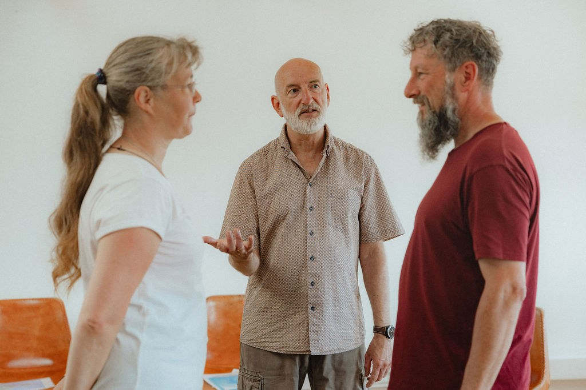

Das geistige Familienstellen ist ein wesentlicher Bestandteil ganzheitlicher Lebensbegleitung. Die weiterentwickelte Form der von Bert Hellinger begründeten Aufstellungsarbeit geht weit über das klassische Familienstellen hinaus: Sie öffnet einen Raum, in dem sich tiefere Zusammenhänge zeigen können – jenseits von Zeit und Ort, bewusstem Denken, Verstehen oder Wollen.

In jeder „Aufstellung“ offenbart sich uns ein geistiges Feld. In diesem Feld können Stellvertreter Wahrnehmungen, Gefühle oder Impulse erleben und zum Ausdruck bringen, die nicht aus ihrer eigenen Biografie stammen, sondern mit der Person, dem Thema oder der Dimension verbunden sind, die sie vertreten. Anders als beim klassischen Familienstellen ist die Rolle eines Stellvertreters jedoch keineswegs für die gesamte Dauer festgelegt, sondern kann sich aufgrund des multidimensionalen Feldes im Laufe der Aufstellung bzw. geistigen Bewegung mehrmals verändern.
Bei meiner Aufstellungsarbeit gibt es keine Trennung zwischen „Stellvertretern“ und „Personen mit eigenem Anliegen“. Jede Aufstellung dient immer der ganzen Gruppe. Dieses ist eine von mehreren wesentlichen Voraussetzungen eines Quantenbewusstseinsfeldes im Gegensatz zu begrenzten bzw. geschlossenen Bewusstseinsfeldern. Jeder Mensch nimmt genau das mit, was für ihn und sein System derzeit möglich und verarbeitbar ist. Ein einziger Satz kann dabei manchmal mehr in Bewegung bringen als eine „eigene“ Aufstellung.
Das geistige Familienstellen ist somit eine Einladung, sich innerlich in den Dienst einer weit über ihn hinausreichenden (geistigen) Bewegung zu stellen und durch die offenbarten Einsichten, im vollen Bewusst-Sein, die Verantwortung für den nächsten fälligen Schritt zu übernehmen. In jedem Fall bekommst du (d)einen heilsamen Impuls für (d)ein stimmiges, dir entsprechendes Leben.
Du hast während einer Aufstellung den Impuls, mit in die Aufstellung zu gehen? Ohne zu wissen, für wen oder weshalb? Dann folge diesem Impuls, geh ins Feld und trage dadurch zur Entwicklung der jeweiligen Aufstellung und letztlich der durch diese wirkenden schöpferischen Bewegung bei.
Du fragst dich, warum es bei meinen Seminaren zwei verschiedene Überschriften gibt? Das hängt vor allem mit der Tiefe der Prozesse bzw. des individuellen Seelenweges eines jeden Menschen zusammen. Keines meiner Seminare bietet mehr oder weniger. Spüre einfach in dich hinein, welche Seminare dich anziehen. So oder so bist du immer zur richtigen Zeit am richtigen Ort. Selbstverständlich kannst du deine Entscheidung und deinen Impuls auch in meinen wöchentlichen Telefonsprechzeiten mit mir „abstimmen“.
Zweimal im Jahr, zur Sommersonnenwende und zur Kraftspeiche „Samhain“, dem Jahreswechsel unserer UR-Ahnen, finden Intensivseminare auf dem roten Felsen von Helgoland statt. Helgoland bietet uns einen weltweit einzigartigen Kraftplatz und unverfälschte ursprüngliche Natur. Hier binden wir uns an unser Stammesgedächtnis an und erfahren Heilungsimpulse bzw. Transformation unserer größten (Seelen-)Blockaden, die wir durch den (letzten) Untergang von Atlantis im Zellgedächtnis gespeichert haben. Viele zurzeit inkarnierte Seelen erleben Wegweiser (Symptome), die unmittelbar mit diesem ur-karmischen Geschehen im Zusammenhang stehen und „endgültig“ gewandelt werden wollen.
Hier geht es zu meinen Veranstaltungen. Wähl einfach die Rubrik „Geistiges Familienstellen“ aus.
Zu den VeranstaltungenFür alle Seminare und Seminarreisen ist aufgrund der begrenzten Teilnehmerzahl eine Anmeldung erforderlich.
Alle Seminare findest du auch im Veranstaltungskalender. Die Adressen der Veranstaltungsorte findest du zusätzlich unter Kontakt.
Die systemische Aufstellungsarbeit wird beim geistigen Familienstellen um eine geistige Dimension erweitert, durch die sie sich für eine größere Bewegung öffnet. Ich gehe hier davon aus, dass es eine schöpferische geistige Kraft gibt, aus der alles hervorgeht und die sich ständig weiterentwickelt. In diese Bewegung ist jedes menschliche Leben eingebettet. Persönliche Probleme und Konflikte werden dementsprechend zu keiner Zeit isoliert betrachtet, sondern als Teil bzw. Wegweiser dieser größeren Zusammenhänge.
Der wesentliche Unterschied liegt in der Ausrichtung: Das klassische Familienstellen dient dazu, systemische Zusammenhänge innerhalb von Familien- und Beziehungssystemen des aktuellen Lebens sichtbar zu machen und eine neue innere Ordnung zu finden. Beim geistigen Familienstellen geht es dagegen weniger um das „Richtigstellen“ eines Systems als um das Mitgehen mit einer geistigen Bewegung, die sich im Aufstellungsfeld zeigt.
Diese geistige Bewegung ist keineswegs in der Weise an Raum und Zeit gebunden, wie wir es aus dem klassischen Familienstellen kennen. Vergangenes, Gegenwärtiges und Zukünftiges können sich gleichzeitig zeigen und neu ordnen.
Beim geistigen Familienstellen wird unter anderem sichtbar, welche Wirkungen entstehen, wenn wir uns mit unserer Wahrnehmung – in der Regel unbewusst – innerhalb bestimmter „Spielregeln“ (Matrix) bewegen.
Eine solche Begrenzung kann beispielsweise entstehen, wenn beim klassischen Familienstellen bereits vor Beginn eines Kurses festgelegt wird, wer mit einem eigenen Anliegen teilnimmt und wer nicht. Auch die eindeutige und endgültige Benennung von Stellvertretern kann dazu führen, dass ein begrenztes Bewusstseinsfeld entsteht. Innerhalb dieses Feldes ist zwar Wandel möglich, dieser bleibt jedoch innerhalb der Matrix und damit innerhalb ihrer Begrenzungen.
Beim geistigen Familienstellen wird auf solche Festlegungen weitgehend verzichtet. Viele Bewegungen laufen in der Stille ab. Dadurch kann ein unbegrenztes Bewusstseinsfeld entstehen, in dem Prozesse und Wandlungen möglich werden, die über die Einschränkungen der Matrix hinausführen. Rollen, Bedeutungen und Zusammenhänge müssen nicht von Anfang an feststehen, sondern dürfen sich aus der geistigen Bewegung heraus zeigen.
Die Wirkungen und Impulse eines unbegrenzten Quantenbewusstseinsfeldes lassen sich jedoch nicht (allein) über den Verstand erfassen. Sie werden vor allem dann erfahrbar, wenn man sich dem Prozess vertrauensvoll hingibt.
Der Begriff „Quantenbewusstseinsfeld“ bezeichnet ein geistiges Bewusstseinsfeld, das nicht durch menschliche Konditionierungen, Denkmuster und Verstrickungen begrenzt ist. In diesem offenen Feld werden nicht nur die bereits bekannten oder vom Verstand erwarteten Lösungen sichtbar, sondern auch neue Möglichkeiten, die außerhalb der gewohnten Matrix liegen.
Ein einfaches Beispiel verdeutlicht das: Ein Mensch lebt in Hamburg und überlegt, nach Lübeck zu ziehen. Der Verstand prüft aufgrund seiner bisherigen Erfahrungen in der Regel zunächst nur zwei Möglichkeiten: in Hamburg bleiben oder nach Lübeck ziehen. Andere Lösungen – etwa ein Umzug nach Kiel oder das Pendeln zwischen Hamburg und Lübeck – werden möglicherweise gar nicht erst wahrgenommen. Tatsächlich kommen jedoch noch viele weitere Wege in Frage.
Die Matrix steht in diesem Zusammenhang für vertraute Denkweisen, Bewertungen und unbewusste „Spielregeln“. Sie beeinflusst, welche Möglichkeiten wir erkennen und welche wir von vornherein ausschließen. Ein Quantenbewusstseinsfeld überwindet diese Begrenzungen und schafft einen Raum, in dem sich der jeweils stimmige nächste Schritt zeigen kann.
Wichtig zu wissen: Ein Quantenbewusstseinsfeld entsteht keineswegs dadurch, dass eine Methode „Quantenheilung“ genannt wird. Entscheidend ist vielmehr der Bewusstseinszustand der Person, die den Prozess begleitet, ganz egal, ob es eine Seminar- oder Unternehmensleitung ist. Ihre innere Haltung, Offenheit und eigenen Begrenzungen beeinflussen die Qualität des entstehenden Feldes.
Welche Impulse und Wandlungen von Symptomen (Wegweisern) möglich sind, hängt demnach wesentlich davon ab, in welchem Bewusstseinsfeld sich die Leitung befindet.
In der Einzelbegleitung ist es möglich, eine eigene Aufstellung zu buchen. In welchen Fällen dies aus therapeutischer Sicht sinnvoll ist, bespreche ich mit dir im Vorfeld persönlich.
In allen Seminaren, in denen geistiges Familienstellen in der von mir weiterentwickelten Form angewandt wird, entsteht ein unbegrenztes Quantenbewusstseinsfeld. In diesem Feld wäre es kontraproduktiv, ein Anliegen im Vorfeld festzulegen bzw. eine „Aufstellung zu buchen“, da dieses Vorgehen zu wesentlichen Einschränkungen führen würde. Siehe dazu auch die FAQ „Worin unterscheidet sich das geistige Familienstellen konkret vom klassischen Familienstellen?“
Vertraue deinem Impuls und deiner Intuition. Sie führt dich genau in das bzw. die Seminare, in denen es für dich etwas zu lösen, zu ordnen und neu zu entfalten gibt.
Selbstverständlich kannst du deinen Impuls bzw. deine Entscheidung beispielsweise im Rahmen der wöchentlichen Telefonsprechzeiten mit mir „abstimmen“.
Ja, das ist jederzeit möglich. Du bist frei, beide Seminarräume unabhängig voneinander zu wählen – so, wie es sich für dich im jeweiligen Moment stimmig anfühlt. Deine Wahrnehmung ist der beste Wegweiser.